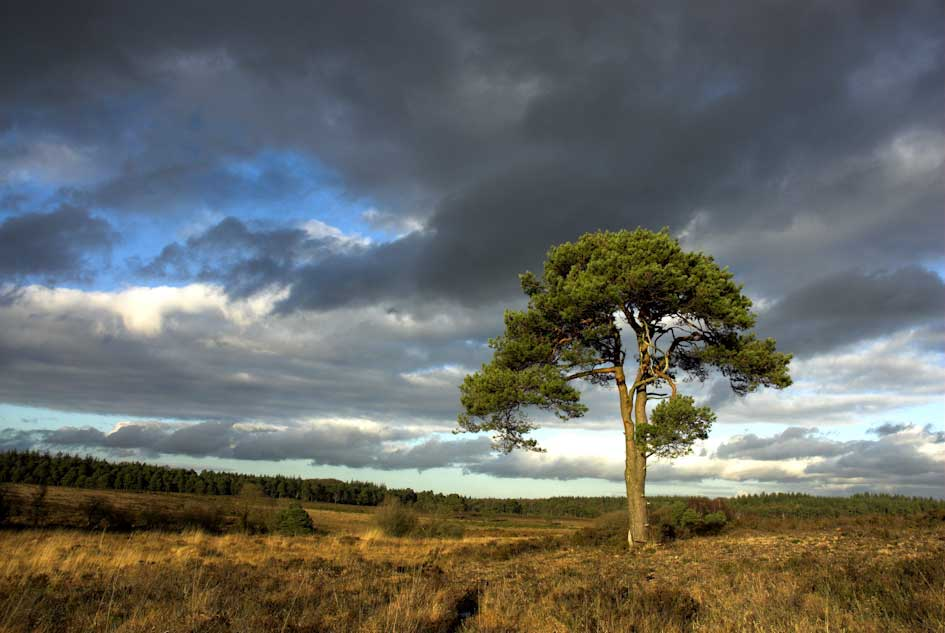

Om mig

Mitt namn är Isabella och jag är utbildad fotograf. Jag älskar att fånga de speciella ögonblicken i vardagen och plocka fram det lilla extra i studion. Kameran följer alltid med då det inte bara är mitt yrke utan min passion. Jag går gärna i naturen för inspiration och ro.
Utbildning
• Master's degree i fotografi vid Artists' Academy
• Engelska två terminer, Storstad Universitet
• Barn- och fritidsprogrammet vid Småstads gymnasium
Fem ord som beskriver mig
- Kreativ
- Utåtriktad
- Noggrann
- Social
- Familjekär
Favoritplats i naturen
En bild från en plats som inspirerar mig som fotograf:
